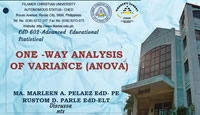

Comparing Three or More Group Means

Instead of performing multiple t-tests, ANOVA allows researchers to test whether there is a significant difference among several group means using a single test.
One-Way ANOVA was developed by Ronald A. Fisher in the early 20th century. It was originally designed for agricultural experiments to compare multiple fertilizer treatments.
Fisher introduced the concept of partitioning variance into between-group and within-group components, forming the foundation of modern experimental statistics.
One-Way ANOVA is a statistical test used to determine whether there are statistically significant differences between the means of three or more independent groups.
ANOVA works by comparing two types of variation:
If between-group variance is significantly larger than within-group variance, we conclude that at least one group mean is different.
Where:
A researcher wants to determine whether three different teaching methods produce different mean test scores among students.
The groups are: Method A, Method B, and Method C.
| Group | Mean | n |
|---|---|---|
| Method A | 80 | 20 |
| Method B | 75 | 20 |
| Method C | 85 | 20 |
At a = 0.05:
Degrees of freedom:
| Source | SS | df | MS | F |
|---|---|---|---|---|
| Between Groups | SSB | k - 1 | MSB | F = MSB / MSW |
| Within Groups | SSW | N - k | MSW | |
| Total | SST | N - 1 |
If the computed F-value is greater than the critical value, we reject the null hypothesis and conclude that at least one group mean is significantly different.
Otherwise, we fail to reject the null hypothesis and conclude that there is no significant difference among the group means.
One-Way ANOVA is used to compare three or more group means simultaneously. It reduces error from multiple t-tests and provides a single overall test of significance.